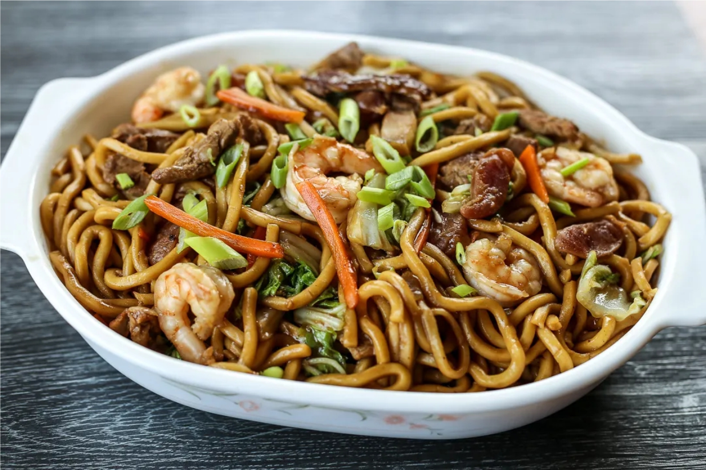
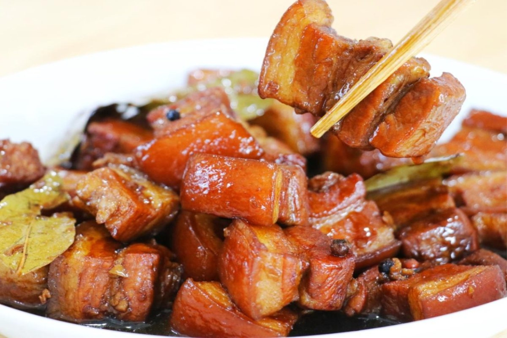

KUSINA NI
NANAY
Close
NEW

Pancit
₱20.00
Pancit is a beloved dish that has become a staple in Filipino cuisine. This delicious and versatile dish consists of noodles stir-fried
with meat, vegetables, and seasonings that create a unique and satisfying taste.
Ingredients:
pancit bihon (rice noodles)
chicken breast, sliced
shrimp, peeled and deveined
vegetables (cabbage, carrots, green beans, and celery), sliced
onion, sliced
cloves of garlic, minced
soy sauce
oyster sauce
chicken broth
vegetable oil
Salt and pepper to taste
Calamansi or lemon wedges (optional).
healthy Benefits
* Rich in carbohydrates: Pancit is a great source of carbohydrates, which provide energy to the body. The noodles used in Pancit are usually made from rice or wheat
flour, which are high in complex carbohydrates and provide a slow release of energy.
* High in protein: Pancit often includes protein-rich ingredients such as meat, chicken, seafood, and vegetables. Protein is essential for building and repairing
tissues in the body and helps to keep the immune system strong.
* Contains fiber: Vegetables such as carrots, cabbage, and bean sprouts are commonly used in Pancit, and these are high in fiber. Fiber is important for maintaining
good digestive health, as it helps to regulate bowel movements and prevent constipation.
* Low in fat: Pancit is generally a low-fat dish, as it is typically stir-fried or boiled with minimal oil. This makes it a healthy option for those looking to
maintain a healthy weight or reduce their fat intake.
* Packed with vitamins and minerals: The vegetables used in Pancit are rich in vitamins and minerals such as vitamin C, vitamin A, iron, and potassium, which are
important for overall health and well-being.
The word "pancit" comes from the Hokkien term "pian e sit," which means "something
conveniently cooked." The dish was brought to the Philippines by Chinese traders and immigrants, who introduced the use of stir-frying and noodles to the local
cuisine.
VIEW DETAILS
Close
NEW

Pork Adobo
₱50.00
Pork Adobo is a dish that has captured the hearts and taste buds of people all over the world. Its bold flavors and aromatic spices have
made it an iconic dish in Filipino cuisine, and its cultural significance has made it an important part of the country's culinary landscape.
Ingredients:
pork belly or shoulder, cut into bite-sized pieces
soy sauce
vinegar
garlic, peeled and minced
onion, chopped
bay leaf
teaspoon of whole black peppercorns
cup of water
tablespoons of cooking oil
Optional ingredients:
sugar
oyster sauce
fish sauce
red chili pepper, sliced (for a spicy version)
healthy Benefits
* Good source of protein: Pork is a rich source of protein, which is important for building and repairing tissues in the body. Protein also helps to keep you feeling
full for longer, which can be helpful for weight management.
* May lower blood pressure: Some studies suggest that the vinegar used in Pork Adobo may help to lower blood pressure. This is because vinegar contains acetic acid,
which can help to reduce the levels of certain enzymes that raise blood pressure.
* Contains antioxidants: Garlic, one of the main ingredients in Pork Adobo, is a good source of antioxidants, which can help to protect the body against damage from
free radicals and reduce the risk of chronic diseases.
* May boost immunity: Garlic and black pepper, both commonly used in Pork Adobo, are believed to have immune-boosting properties. This can help to protect the body
against infections and illnesses.
* May improve digestion: Some of the ingredients in Pork Adobo, such as garlic, onion, and bay leaf, have been traditionally used to aid digestion and alleviate
digestive issues.
Pork Adobo is a traditional Filipino dish that has been around for centuries. The word
"adobo" comes from the Spanish word "adobar," which means to marinate or sauce. The dish was originally a way of preserving meat in the tropical climate of the
Philippines before the advent of refrigeration.
VIEW DETAILS
Close
NEW

Chicken Curry
₱50.00
Chicken Curry is a dish that brings together a variety of bold flavors and aromatic spices that have become synonymous with Filipino
cuisine. Whether enjoyed as a hearty main dish or as a comforting meal on a rainy day, Philippine Chicken Curry is a dish that has captured the hearts and taste
buds of people all over the world.
Ingredients:
chicken
potatoes chopped
carrot sliced
garlic minced
stalks celery
onion chopped
red bell pepper cut into cubes
fish sauce
coconut milk
curry powder
ginger cut into strips
water
healthy Benefits
* Protein: Chicken is a good source of protein, which is essential for building and repairing tissues, supporting immune function, and maintaining healthy
skin, hair, and nails.
* Healthy Fats: Coconut milk is often used in chicken curry, which contains medium-chain triglycerides (MCTs), a type of healthy fat that may help boost
metabolism and aid in weight loss.
* Anti-inflammatory Properties: Many of the spices used in chicken curry, such as turmeric, cumin, and coriander, have anti-inflammatory properties that
may help reduce inflammation in the body and improve overall health.
* Vitamins and Minerals: Chicken curry is often made with a variety of vegetables, such as onions, bell peppers, and spinach, which provide essential
vitamins and minerals such as vitamin C, potassium, and fiber.
* Heart Health: Some studies suggest that the spices used in chicken curry, such as turmeric, may help improve heart health by reducing inflammation and improving blood flow.
However, it is important to note that some chicken curry recipes can be high in fat and
calories, particularly if made with coconut milk and served with rice or naan bread. To make a healthier chicken curry, use lean chicken breast, low-fat yogurt, and
plenty of vegetables. You can also reduce the amount of coconut milk used or use a light version to cut back on calories.
VIEW DETAILS
Close
NEW

Burger Steak
₱50.00
Burger Steak apart from other dishes is its combination of savory beef, rich gravy, and satisfying sides. It is a dish that is perfect for
those looking for a filling and flavorful meal that is sure to satisfy any craving.
Ingredients:
pound ground beef
bread crumbs
egg
salt
vegetable oil
onion, sliced
garlic cloves, minced
beef broth
cornstarch
water
healthy Benefits
* Protein: Burger steak is a good source of protein, which is important for building and repairing muscle tissue, as well as supporting the immune system and
other body functions.
* Iron: Beef is a good source of iron, which is important for healthy blood cells and oxygen transport in the body.
* Vitamin B12: Beef is also a good source of vitamin B12, which is important for nerve function and the production of red blood cells.
* Zinc: Beef is a good source of zinc, which is important for immune system function, wound healing, and growth and development.
* Satiety: The high protein and fat content in burger steak can help you feel fuller for longer, which may help prevent overeating and snacking between meals.
However, it is important to note that burger steak is often high in saturated fat,
sodium, and calories, especially when served with gravy and fried sides. It is best to consume burger steak in moderation and choose lean cuts of beef, and
also balance with healthier sides such as vegetables or salads.
VIEW DETAILS
Close
NEW

Grill Pork
₱50.00
grilled pork apart from other dishes is its combination of savory meat and smoky flavor. It is a dish that is perfect for those looking
for a satisfying and hearty meal that is both delicious and nutritious.
Ingredients:
pork shoulder sliced into thin pieces
Marinade Ingredients
soy sauce
juice extracted from calamansi or lemon
banana ketchup
dark brown sugar
garlic powder
ground black pepper
salt
lemon or lime soda
healthy Benefits
* Protein: Pork is a good source of high-quality protein, which is essential for building and repairing tissues, supporting immune function, and maintaining
healthy skin, hair, and nails.
* Vitamins and Minerals: Pork is also a good source of essential vitamins and minerals, such as vitamin B12, iron, and zinc, which are important for
maintaining overall health and wellness.
* Muscle Health: Pork is also a good source of the amino acid leucine, which is important for building and maintaining muscle mass. Adequate muscle mass is
important for overall health, particularly as we age.
LHowever, it is important to note that some pork cuts can be high in saturated fat
and calories, particularly if they are heavily marbled. To make a healthier grilled pork dish, choose lean cuts like tenderloin or loin chops, and trim any visible
fat before grilling. You can also marinate the pork in a flavorful and healthy marinade made with herbs, spices, and healthy oils to add flavor without adding excess
calories or unhealthy fats.
VIEW DETAILS
Close
NEW

Eggplant Omelette
₱50.00
What sets Eggplant Omelette apart from other dishes is its combination of savory eggplant and fluffy eggs, which makes for a flavorful and
satisfying meal. The dish is also known for its versatility and can be served on its own, as a side dish, or even as a filling for sandwiches or wraps.
Ingredients:
eggplant
vegetable oil
onion
garlic clove
salt and freshly ground black pepper
5 large eggs (250g), divided
Ketchup or banana ketchup, for serving
healthy Benefits
* Fiber: Eggplant is a good source of dietary fiber, which can help promote digestive health, lower cholesterol levels, and control blood sugar levels.
* Vitamins and Minerals: Eggplant is also a good source of essential vitamins and minerals, such as vitamin C, vitamin K, folate, and potassium, which
are important for maintaining overall health and wellness.
* Low in Calories: Eggplant is low in calories, making it a great option for those looking to lose or maintain weight.
* Antioxidants: Eggplant contains antioxidants, such as anthocyanins and chlorogenic acid, which can help protect against cellular damage and inflammation.
* Protein: Eggs are a good source of high-quality protein, which is essential for building and repairing tissues, supporting immune function, and maintaining
healthy skin, hair, and nails.
However, it is important to note that an omelette can be high in calories and fat,
depending on the ingredients and cooking method used. To make a healthier eggplant omelette, use a non-stick pan and cook with minimal oil or butter. You can also
add plenty of vegetables, such as tomatoes, onions, and spinach, to boost the nutritional value and flavor of the dish. Additionally, using egg whites or a
combination of whole eggs and egg whites can reduce the calorie and fat content of the omelette.
VIEW DETAILS